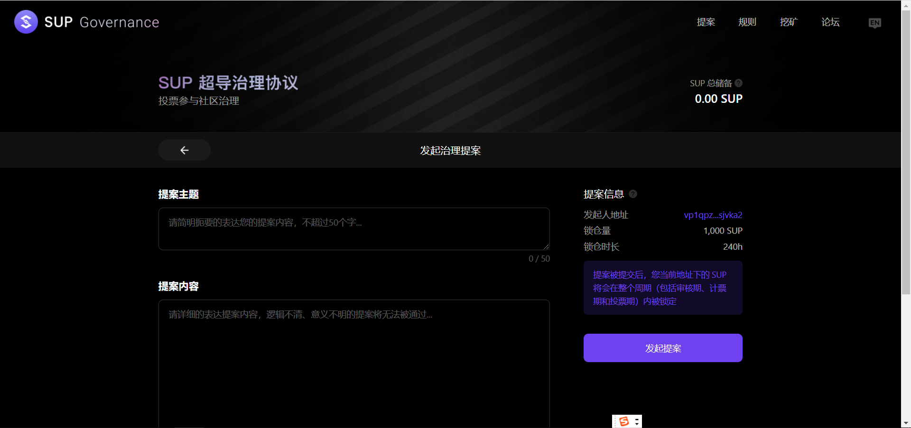
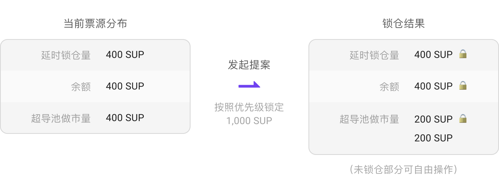

1、我如何参与超导协议的提案
首先确保你必须拥有1000 SUP票，可以是SUP余额，SUP流动性做市或者延迟锁仓。具体见https://support.bymov.io/sup/%E8%B6%85%E5%AF%BC%E5%8D%8F%E8%AE%AE%E6%B2%BB%E7%90%86%E8%AF%A6%E7%BB%86%E8%A7%84%E5%88%99.html
然后进入https://supertx.bymov.io/gov 授权钱包，点击发起提案按钮，则可以进入提案编辑页面

2、我如何参与提案投票
首先在计票期阶段，将您的SUP转入需要投票的账户。等待计票期结束后，则自动获得您可以投票的数量
3、为什么有的地址发提案后，将SUP转出又发起新的提案
这可能是因为他的地址中有锁仓的部分，提案会优先计算锁仓的SUP，具体规则见下图：

4、计票期结束后，我的SUP是否能够使用？
计票期结束后，您的SUP可以任意处置，都不影响你可投的票数
5、我是否能够对两个选项投票？
不能，当前仅支持对一个选项进行投票，而且一次性投出所有票
6、假设有100个sup，全部投了第一个提案，那么还能投第二个提案吗？
可以，每一个提案都是独立计票，只要在计票时刻你的SUP在你的钱包中，则会自动获得该提案的票
7、我有锁定的sup为啥不能投票？
因为提案还在审核，每一个提案需要审核48小时，审核通过后才能投票